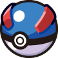
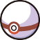
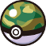

Poke Ball

A mais classica de todas as pokebolas e a mais simples tambem utilizada para capturar pokemons de level baixo.
Great Ball
Uma bola de medio desempenho que oferece uma taxa de captura de Pokémon maior do que um Pokébola padrão,sendo usada para capturar pokemons de niveis intermediario e baixo.
Ultra Ball
Uma bola de desmpenho alto que oferece uma taxa de captura de Pokémon mais elevada do que a Great Ball,sendo usada para para capturar pokemons de niveis baixo,medio,alto.
Dive Ball
Feita para ser mais efetiva com poekemons que se encontram em mares profundos(Ou seja pokemons que usam o HM Dive).
Dream Ball
Efetiva para capturar pokemons em zonas de floresta.
Dusk Ball
Um pokebola efetiva para capturar pokemons selvagem a noite ou cavernas
Fast Ball
Uma Pokébola efetiva para capturar Pokémons que escapam da batalha mais facilmente.
Heal Ball
Uma Pokébola que restaura o HP do Pokémon capturado e elimina qualquer problema de status.
Heavy Ball
Uma Pokébola para capturar Pokémon que posuem um peso alto.
Level Ball
Uma Pokébola efetiva em Pokémons que são de um nível menor do que o seu próprio.
Love Ball
Pokébola efetiva para capturar Pokémons que são do sexo oposto ao seu Pokémon.
Master Ball
A melhor bola com o nível máximo de desempenho. Ele vai pegar qualquer Pokémon selvagem sem falhar.
Moon Ball
Uma Pokébola efetiva para capturar Pokémons que evoluem com a Moon Stone.
Net Ball
Uma Pokébola um pouco diferente, ela e efetiva especialmente em Pokémons do tipo água ou do tipo inseto.
Primier Ball
Uma Pokébola um pouco rara que foi feita especialmente para comemorar um evento de algum tipo.
Safari Ball
Pokébola especial que é usado apenas na Safari Zone.
Sport Ball
Uma Pokébola especial para o concurso de pegar insetos de Johto.
Beast Ball
Designada para capturar Ultra Beasts. Tem uma chance muito pequena de sucesso para capturar outros Pokémon.